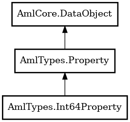

Int64Property
Object Hierarchy:

Description:
public class Int64Property :
Property
Content:
Creation methods:
Methods:
Inherited Members:
All known members inherited from class AmlTypes.Property
All known members inherited from class AmlCore.DataObject